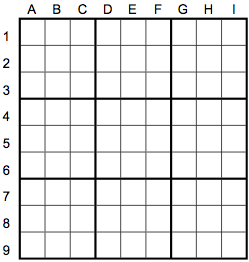
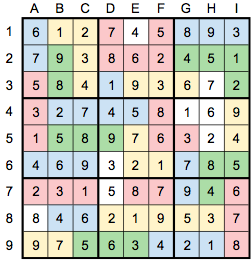
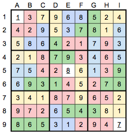

The text of the puzzle presents a noir-style narrative of detectives tracking a (very active) serial killer in downtown Noirleans.
Let's start with geography. The story describes a region of downtown Noirleans with streets numbered 1 through 9 running east-west and avenues named after mystery writers starting with the letters A through I running north-south. (The author starting with E is never named explicitly, which suggests that you don't need to do anything in particular with the author names.) There are also occasional references to neighborhoods or districts of downtown called South Central, Central West, Mid-Downtown, Southeast, etc. Put it all together and you have a grid measuring 9 blocks by 9 blocks, divided into nine 3x3 areas by North/Central/South thirds and East/Central/West thirds, with Mid-Downtown in the center. What does that look like?
It looks like a sudoku, which is what this puzzle is. What kind of sudoku is it? The story is themed around tracking down a serial killer, so this is a killer sudoku. The "dragnets" described in the story are killer cages; the text of the story tells you that the cages (dragnets) established in February are of size 2, and increase every month until they are size 5 in May, so the month number corresponds to the cage size. You might well surmise that the day of the month indicates the cage total, and you would be right; this is consistent with the fact that the dates in each month are within the range to be valid cage totals for a cage of that size (between 3 and 17 for February, 6 to 24 for March, at least 10 for April, at least 15 for May).
Unlike a regular killer sudoku, you're not given the full cage layouts; instead, you have to figure them out, based on the location of one cell in each cage and the cage sizes and totals, subject to the constraints of normal sudoku rules and the fact that the cages cannot overlap. (This is sometimes called a "hidden killer sudoku", which is an apt description thematically.) The cages do not quite cover the entire grid; a count indicates that the total sizes of all the cages add up to 73, so there are 81–73 = 8 cells that are not in any cage. So you can't use inferences like "this is the only cage that can reach this cell"; nevertheless, there is a logical solution path and a unique solution:
Solution grid (with arbitrary colors chosen to distinguish cages):
What do we do with this solved grid? The final part of the story contains a ciphered message, found "on shift patrolling east along 9th street":
KBISRNJCGKVJGPHYRZEHDLIAYMKRGJHVIMTKKBK
We can use row 9 of the solved sudoku (975634218) as a key to decipher this message, by shifting the nth letter of the ciphertext by the nth digit of the 9-digit key (repeating as necessary). The result is:
TINYURLDOTCOMSLASHNOIRLEANSANONYMOUSTIP
Or, to put it into a more readable format: tinyurl.com/noirleansanonymoustip
That link takes you to another hidden killer sudoku puzzle, this time with only three-cell cages. (It is by design that this second sudoku is accessible well before the first one is completely solved, so that a team could parallelize the solving of the two puzzles.) There are 26 cage total clues, so the 78 cells in cages completely cover the grid other than the three given digits. Again, there is a logical solution path and a unique solution:

To extract the final answer, we need to compare these two solution grids and also make use of the text in the last section of the story, which refers to "three-card poker" with "aces high, no combinations". This is an ordering mechanism on the twenty-six three-cell cages in the Anonymous Tip sudoku: consider each one as a three-card poker hand (with the digit 1 treated as an ace), and rank them in poker order. This produces the following ordering:
| Rank | Cage | Sum | Letter | Rank | Cage | Sum | Letter | |
|---|---|---|---|---|---|---|---|---|
| 1 | A93 | 13 | A | 14 | 965 | 20 | N | |
| 2 | A82 | 11 | B | 15 | 963 | 18 | O | |
| 3 | A74 | 12 | C | 16 | 942 | 15 | P | |
| 4 | A63 | 10 | D | 17 | 875 | 20 | Q | |
| 5 | A52 | 8 | E | 18 | 874 | 19 | R | |
| 6 | A43 | 8 | F | 19 | 865 | 19 | S | |
| 7 | A42 | 7 | G | 20 | 863 | 17 | T | |
| 8 | A32 | 6 | H | 21 | 842 | 14 | U | |
| 9 | 987 | 24 | I | 22 | 765 | 18 | V | |
| 10 | 986 | 23 | J | 23 | 653 | 14 | W | |
| 11 | 975 | 21 | K | 24 | 652 | 13 | X | |
| 12 | 974 | 20 | L | 25 | 543 | 12 | Y | |
| 13 | 972 | 18 | M | 26 | 432 | 9 | Z |
The fact that there are 26 cages suggests converting 1–26 into A–Z for extraction, which is what the fourth column does. So using this ordering, the Anonymous Tip grid is a key, mapping every location in the grid (except for the three given digits) to a letter of the alphabet.
We then return to the first sudoku grid. We noted earlier that the cages cover all but eight cells of the grid; looking at the solved grid, those eight cells happen to contain the digits 1 to 8 with no repeats. Since those are the eight blocks of the city not covered by dragnets, perhaps the killer is still hiding somewhere in there? Taking the corresponding letter from the second sudoku grid and reading them off in 1–8 order gives COATROOM, which is the final answer to the puzzle. (2, 6, and 7 all belong to the same 18-sum cage in the second sudoku, which is why the O is repeated in the answer.)